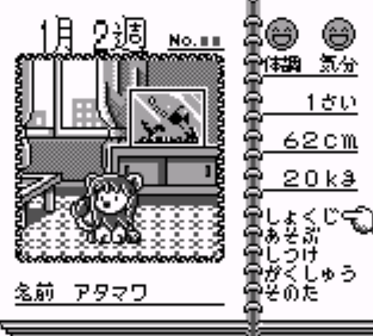

About me
romhacking?
ROM
Read Only Memory
Hacking
changing something
to make it work
in an unintended way
What can we do with it?
- change logic
- change sprites
- change music
- change text
Tools
- hex editor
- relative searcher
hex editors
- hex workshop
- winhex
- 010 editor
- windhex
Relative searcher
monkey moore
Rsearch
The game
Animal Breeder (gameboy)

Theory
bits & bytes
- 1 bit = 0 or 1
- 1 byte = 8 bits
Theory
hexadecimals
0-9 and A-F
4 bits
- 0 = 0000
- 1 = 0001
- 2 = 0010
- ...
- D = 1101
- E = 1110
- F = 1111
Searching the text
Changing the text
found letters
Table file:
00=あ
01=い
02=う
03=え
04=お
05=か
06=き
07=く
08=け
09=こ
0A=さ
0B=し
0C=す
0D=せ
0E=そ
0F=た
10=ち
11=つ
12=て
13=と
14=な
15=に
16=ぬ
17=ね
18=の
19=は
1A=ひ
1B=ふ
1C=へ
1D=ほ
1E=ま
Relative searching...but how??
abc alphabet order:
a = first letter
b = second letter
c = third letter
file:
04 05 06 07 08
results:
1) 04 05 06
2) 05 06 07
3) 06 07 08
Workflow
alphabet:
あいうえお = aiueo = 00 01 02 03 04
かきくけこ = kakikukeko = 05 06 07 08 09
さしすせそ = sashisuseso = 0A 0B 0C 0D 0E
たちつてと = tachitsuteto = 0F 10 11 12 13
なにぬねの = naninuneno = 14 15 16 17 18
はひふへほ = wahifueho = 19 1A 1B 1C 1D
まみむめも = mamimumemo = 1E 1F 20 21 22
やゆよ = yayuyo = 23 24 25
らりるれろ = rarirurero = 26 27 28 29 2A
わん”。ー = wao".ｰ = 2B 2D ?? ?? ??
を = 2C
ぁぃぅぇぉ = aiueo = 2E 2F 30 31 32
ゃゅょっ = ~ya~yu~yo~tsu = 33 34 35 36